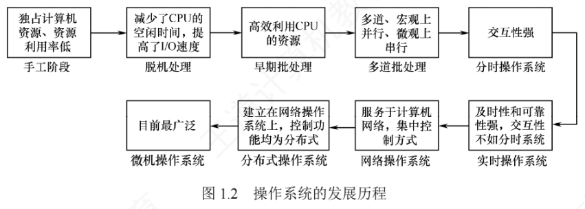

1.2 操作系统发展历程
操作系统并非一开始就存在，它是为解决「人机矛盾」「CPU 与 I/O 设备速度不匹配」等矛盾逐步演进而来的。沿着「手工操作 → 批处理 → 分时 → 实时 → 网络/分布式 → 微机」的主线复习，各阶段的驱动力、特征、优缺点就一目了然。
1.2.1 手工操作阶段（未配置操作系统）
1. 人工操作方式
最早的用法非常原始：用户把程序和数据穿孔在纸带或卡片上，装入输入设备后手动控制读入内存并启动运行，装入、执行、输出全过程全靠人工。随着硬件性能提升，人机速度矛盾日益突出，资源利用率低下的问题愈发严重。这一方式有两个突出缺点：
- 用户独占全机——虽无资源竞争，但系统资源利用率极低；
- CPU 长时间空闲——只能等待人工完成 I/O 操作，计算能力无法发挥。
为此，人们提出用高速设备替代人工来控制作业流程。
2. 脱机 I/O 方式
为缓解人机速度不匹配以及 CPU 与外设之间的速度差异，出现了脱机 I/O 技术：引入一台外围机（如小型专用计算机），在 CPU 不参与的情况下预先完成 I/O 准备——输入时，外围机把纸带/卡片上的程序和数据读入磁带，供 CPU 之后调入内存；输出时，CPU 把结果先写入磁带，再由外围机输出到外设。因为 I/O 完全由外围机独立完成、脱离了主机的直接控制，故称「脱机」；相应地，由主机直接管理 I/O 设备的方式称为联机 I/O。
脱机 I/O 的主要优点：
- 装带、卸带及数据传输等操作在脱机状态下由外围机完成，显著减少了 CPU 的空闲时间；
- CPU 直接从高速磁带读/写数据，大幅提升了 I/O 效率。
1.2.2 批处理阶段（操作系统开始出现）
在脱机 I/O 的基础上，为实现作业的自动连续处理并进一步提高 CPU 与系统资源的利用率，批处理系统应运而生。按发展历程分为单道批处理与多道批处理两步。
1. 单道批处理系统
系统先把一批作业以脱机方式输入磁带，并配备一个监督程序（Monitor）；在监督程序控制下，作业自动、顺序地逐个运行。作业虽然成批提交，但内存中始终只驻留一道用户程序。主要特征有三：
- 自动性：正常情况下，磁带上的作业自动连续执行，无须人工干预；
- 顺序性：作业按磁带上的顺序依次装入内存，先装入者先完成；
- 单道性：内存中仅允许一道用户程序运行，监督程序每次只调入一道作业，待其完成或异常终止后才装入下一道。
局限也很明显：正在运行的作业一旦发起 I/O 请求，高速的 CPU 只能空闲等待低速 I/O 结束，资源利用率依旧低下。为突破这一瓶颈，多道程序设计技术被引入。
2. 多道批处理系统
用户提交的作业先存放在外存的后备队列中；作业调度程序按一定算法从队列中选取若干作业调入内存，使它们在管理程序的控制下并发执行并共享系统资源。当某道程序因 I/O 请求暂停时，CPU 立即切换到另一道就绪程序继续执行。这一机制依赖中断技术，让系统各部件尽可能保持忙碌，从而显著提升整体吞吐量和资源利用率。
多道程序设计的核心特点：
- 多道：内存中同时驻留多道相互独立的程序；
- 宏观上并行：多道程序都处于运行过程中、都未结束；
- 微观上串行：各程序轮流占用 CPU，交替执行。
实现多道程序设计需要解决四个关键问题：①处理器的分配策略；②多道程序的内存分配与保护机制；③I/O 设备的分配与调度方法；④大量程序与数据的组织、存储方式以及安全性与一致性保障。
优点：资源利用率高（多道程序共享 CPU、内存、I/O 设备）、系统吞吐量大（各部件保持高负载）。缺点：缺乏交互能力，用户无法了解程序运行状态、无法干预，响应时间较长。
1.2.3 分时操作系统
分时技术把处理器时间划分成很短的时间片，轮流分配给各用户程序：某程序在时间片内没算完就暂停，释放处理器给其他程序，下一轮再继续。由于计算机速度极快、轮转迅速，每个用户都能获得「独占计算机」的交互体验。
分时操作系统允许多个用户通过终端同时连接一台主机并与之交互、彼此互不干扰，核心要求是：用户输入命令后，系统能及时接收、快速处理并立即返回结果。它基于多道程序设计，但与多道批处理有本质区别：后者追求高吞吐量和高资源利用率、无须人工干预；前者以人机交互为核心目标。由此形成四大特征：
- 同时性（多路性）：多个终端用户同时使用同一台计算机；
- 交互性：用户可通过终端以人机对话方式直接控制程序运行；
- 独立性：各用户操作相互隔离，每个用户都感觉系统被自己独占；
- 及时性：用户的请求能在较短时间内获得响应。
1.2.4 实时操作系统
有些场景要求系统在严格限定的时间内对外部事件做出响应，并保证响应的确定性与时限性，于是出现了实时操作系统。它摒弃分时系统的时间片轮转，改用基于任务紧迫性或截止时间的调度策略，确保高优先级任务及时获得处理器。按时限要求的严格程度分两类：
- 硬实时操作系统：任务必须在规定的截止时间前完成，否则可能引发灾难性后果，如飞机控制系统、导弹制导系统，必须提供绝对可靠的时间保证；
- 软实时操作系统：允许偶尔错过截止时间，只要不造成永久性损害即可，如飞机订票系统、银行管理系统，短暂延迟通常可以容忍。
在实时操作系统控制下，计算机接收到外部事件后能在可预测且有保障的时限内完成处理，主要特点包括：确定性（响应时间可预测）、高可靠性和强时效性。
1.2.5 网络操作系统和分布式系统
网络操作系统是在单机操作系统基础上扩展网络功能形成的，支持计算机之间的通信、数据传输和资源共享（如文件、打印机共享）。各计算机保持独立运行，用户需显式指定远程资源的位置才能访问，系统不提供统一的全局视图。
分布式系统是由多台计算机组成的集合，具有以下特征：节点地位对等、无固定主从关系；系统资源可被所有用户透明地共享；具备良好的可扩展性与容错能力、支持动态重组；能将一个任务分解为多个子任务，分布到不同节点上并行执行、协同完成。管理这种系统的分布式操作系统的核心特点是分布性、并行性和透明性，其中透明性尤为关键——用户无须感知底层的多机结构，体验如同使用一台计算机。
两者区别：网络操作系统只实现资源共享与通信功能，远程操作需用户主动干预；分布式操作系统通过协同机制让多台计算机共同完成同一任务，并向用户提供单一系统映像。
1.2.6 微机操作系统
微机操作系统是为个人计算机、工作站等微型计算机设计的系统，按用户数量和任务并发能力分三类：
| 类型 | 特点 | 典型代表 |
|---|---|---|
| 单用户单任务 | 仅允许一个用户登录并运行一个程序；结构简单，资源利用率低 | 早期的 MS-DOS（16 位） |
| 单用户多任务 | 一个用户可同时运行多个应用程序，通过时间片轮转实现任务切换，交互体验与资源利用率俱佳，是当前主流 | Windows XP 及后续版本、macOS、现代 Linux 桌面版 |
| 多用户多任务 | 多个用户通过终端或网络同时登录，各自并发执行多个任务，资源共享且互不干扰；常用于服务器或高性能工作站 | UNIX、Linux 服务器版、Windows Server 系列 |
此外还有嵌入式操作系统、服务器操作系统、智能手机操作系统等。整个发展历程可用下图总览。
